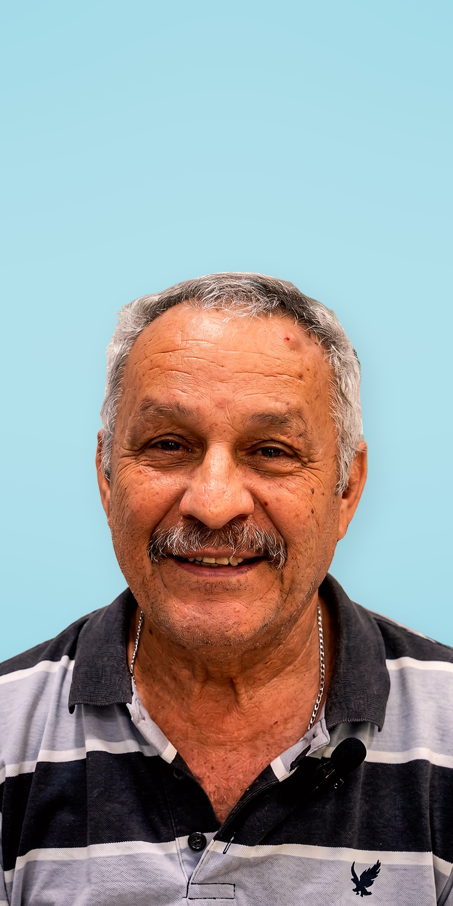
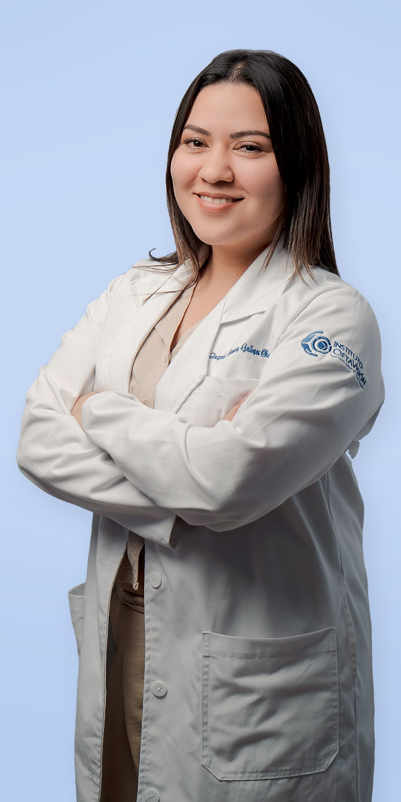

Médicos certificados
Certificados por el Consejo Mexicano de Oftalmología.


¿Ves borroso o nublado? Revisamos tu vista con especialistas, sin vueltas, por WhatsApp.
 Instituto Oftavisión · Tuxpan, Ver.
Instituto Oftavisión · Tuxpan, Ver.
En Oftavisión hacemos oftalmología de alta especialidad con trato cercano. Tu consulta, tus estudios y tu cirugía de catarata se hacen en la misma clínica, con médicos certificados que te explican cada paso con palabras claras.
+25,000 cirugías al año en nuestra red de +15 centros quirúrgicos
Agendar consultaNuestras clínicas combinan tecnología de alta especialidad con un trato cálido. Encuentra la sede más cerca de tu casa y agenda por WhatsApp.
En tu cirugía de catarata se coloca un lente intraocular. Trabajamos con las marcas líderes y tu médico te ayuda a elegir el tuyo.
Tu médico te explica las opciones de lente para tu cirugía de catarata, entre ellas:




Nuestro equipo médico combina años de práctica con tecnología de quirófano para que tu experiencia sea clara y cómoda.
Certificados por el Consejo Mexicano de Oftalmología.
Microscopios quirúrgicos y equipos de diagnóstico de alta especialidad.
Te escuchamos y te explicamos lo que ves, sin tecnicismos.
Revisiones después de tu cirugía para cuidar tu recuperación.
4.5 · +200,000 pacientes atendidos